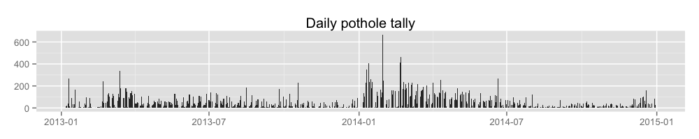
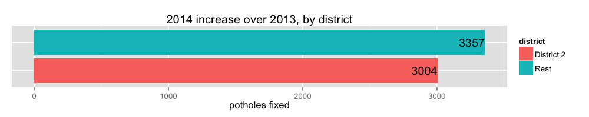
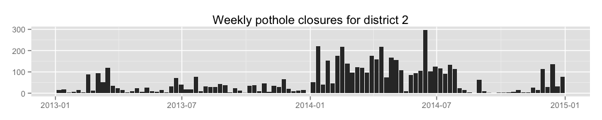
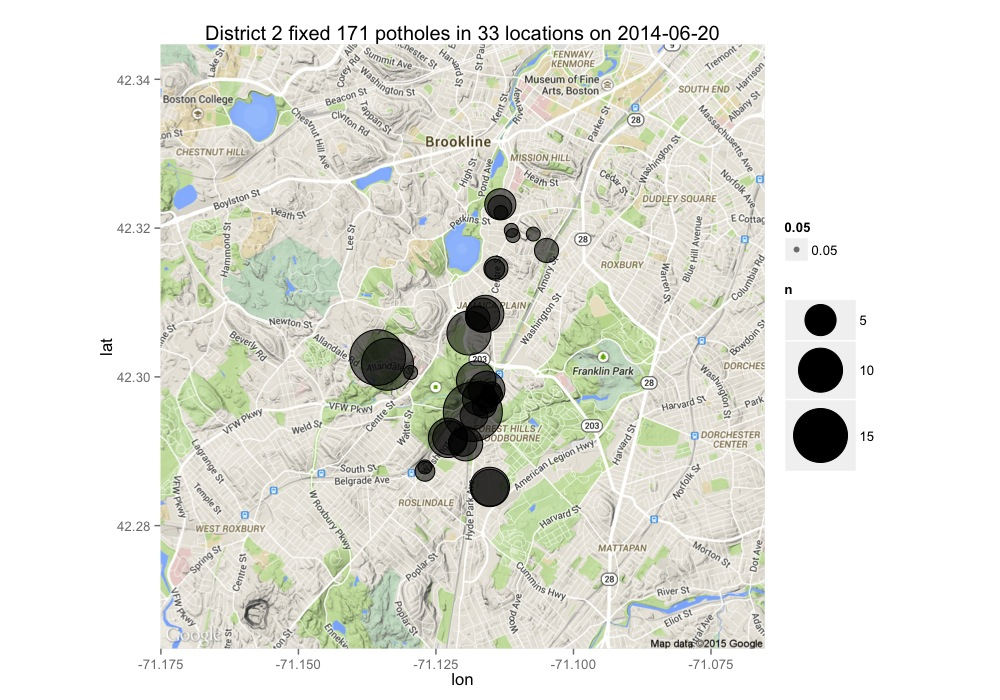
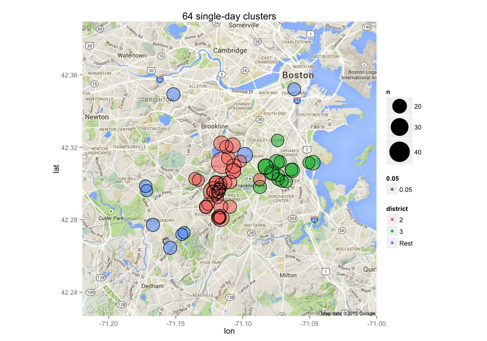
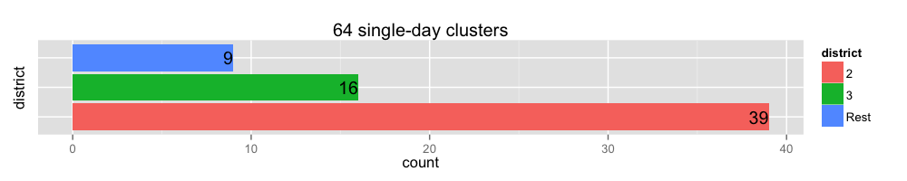

A note on the format: each question is followed by the R code that generates the answer. This is also known as reproducible research, a practice that’s slowly being adopted by newspapers (e.g. 538, The Upshot). From wikipedia: “The term reproducible research refers to the idea that the ultimate product of academic research is the paper along with the full computational environment used to produce the results in the paper such as the code, data, etc. that can be used to reproduce the results and create new work based on the research.”
potholes %>%
filter(!is.na(DATE.CLOSED.R)) %>%
mutate(YEAR = year(DATE.CLOSED.R)) %>%
group_by(YEAR) %>%
summarise(POTHOLES = n()) %>%
knitr::kable()| YEAR | POTHOLES |
|---|---|
| 2013 | 12825 |
| 2014 | 19186 |
data <- potholes %>%
filter(!is.na(DATE.CLOSED.R)) %>%
arrange(DATE.CLOSED.R) %>%
group_by(DATE.CLOSED.R) %>%
summarise(closures = n())
write.csv(data, file='output/potholeClosuresPerDay.csv', row.names=FALSE)
ggplot(data, aes(DATE.CLOSED.R, closures)) +
geom_bar(stat='identity') +
ggtitle('Daily pothole tally') +
theme(
axis.title.x = element_blank(),
axis.title.y = element_blank()
)
data <- rbind(
(potholes %>%
filter(pwd_district == '2') %>%
mutate(district = 'District 2')),
(potholes %>%
filter(pwd_district != '2') %>%
mutate(district = 'Rest'))) %>%
mutate(YEAR = year(DATE.CLOSED.R)) %>%
filter(!is.na(YEAR)) %>%
group_by(district, YEAR) %>%
tally() %>%
summarise(increase = diff(n))
write.csv(data, 'output/yearlyIncreaseByDistrict.csv', row.names = FALSE)
ggplot(data, aes(x=district, y=increase, fill=district)) +
geom_bar(stat='identity') +
geom_text(aes(label=increase), hjust=1) +
ylab('potholes fixed') +
xlab(NULL) +
theme(
axis.ticks.y = element_blank(),
axis.text.y = element_blank()
) +
coord_flip() +
ggtitle('2014 increase over 2013, by district')
data <- potholes %>%
filter(
!is.na(DATE.CLOSED.R),
pwd_district == '2'
) %>%
transmute(WEEK = floor_date(DATE.CLOSED.R, 'week')) %>%
arrange(WEEK) %>%
group_by(WEEK) %>%
tally()
write.csv(data, 'output/weeklyClosuresForDistrict2.csv', row.names = FALSE)
ggplot(data, aes(WEEK, n)) +
geom_bar(stat='identity') +
ggtitle('Weekly pothole closures for district 2') +
theme(
axis.title.x = element_blank(),
axis.title.y = element_blank()
)
district <- 2
data <- potholes %>%
filter(
!is.na(DATE.CLOSED.R),
pwd_district == district,
LONGITUDE != -71.0587,
LATITUDE != 42.3594
) %>%
arrange(DATE.CLOSED.R) %>%
group_by(DATE.CLOSED.R, pwd_district) %>%
tally() %>%
group_by(pwd_district) %>%
slice(which.max(n)) %>%
inner_join(potholes, by=c('DATE.CLOSED.R', 'pwd_district')) %>%
filter(
LONGITUDE != -71.0587,
LATITUDE != 42.3594
) %>%
select(
LATITUDE,
LONGITUDE,
DATE.CLOSED.R
) %>%
group_by(LATITUDE, LONGITUDE, DATE.CLOSED.R) %>%
tally() %>%
ungroup() %>%
arrange(desc(n))
csv <- data %>%
select(LATITUDE,LONGITUDE,n)
write.csv(csv, str_c('output/bestDayForDistrict', district, '_', unique(data$DATE.CLOSED.R), '.csv'), row.names = FALSE)
map <- get_map(location=c(min(data$LONGITUDE), min(data$LATITUDE), max(data$LONGITUDE), max(data$LATITUDE)), zoom=13)
ggmap(map) +
geom_point(aes(x=LONGITUDE, y=LATITUDE, size=n, alpha=0.05), data=data) +
geom_point(shape=1, aes(x=LONGITUDE, y=LATITUDE, size=n), data=data) +
scale_size_area(max_size=20) +
ggtitle(str_c('District ', district, ' fixed ', sum(data$n), ' potholes in ', nrow(data) , ' locations on ', unique(data$DATE.CLOSED.R)))
data <- rbind(
(potholes %>%
filter(pwd_district %in% c('2', '3')) %>%
mutate(district = pwd_district)),
(potholes %>%
filter(!(pwd_district %in% c('2', '3'))) %>%
mutate(district = 'Rest'))) %>%
select(-pwd_district) %>%
filter(
LATITUDE!=42.3594, LONGITUDE!=-71.0587,
year(DATE.CLOSED.R) == 2014
) %>%
group_by(DATE.CLOSED.R, LONGITUDE, LATITUDE, district) %>%
tally() %>%
ungroup() %>%
filter(n >= 15) %>%
select(-DATE.CLOSED.R)
write.csv(data, 'output/clustersIn2014.csv', row.names = FALSE)
map <- get_map(location=c(min(data$LONGITUDE), min(data$LATITUDE), max(data$LONGITUDE), max(data$LATITUDE)), zoom=12)
ggmap(map) +
geom_point(aes(x=LONGITUDE, y=LATITUDE, size=n, alpha=0.05,color=district), data=data) +
geom_point(shape=1, aes(x=LONGITUDE, y=LATITUDE, size=n), data=data) +
ggtitle(str_c(nrow(data), ' single-day clusters')) +
scale_size_area(max_size=15)
clusters <- data %>%
group_by(district) %>%
summarise(count = n())
ggplot(clusters, aes(x=district, y=count, fill=district)) +
geom_bar(stat='identity') +
geom_text(aes(label=count), hjust=1) +
theme(
axis.ticks.y = element_blank(),
axis.text.y = element_blank()
) +
coord_flip() +
ggtitle(str_c(nrow(data), ' single-day clusters'))
potholes %>%
filter(LATITUDE == 42.3520, LONGITUDE == -71.0615) %>%
group_by(LATITUDE, LONGITUDE, pwd_district, DATE.CLOSED.R) %>%
tally() %>%
knitr::kable()| LATITUDE | LONGITUDE | pwd_district | DATE.CLOSED.R | n |
|---|---|---|---|---|
| 42.352 | -71.0615 | 1C | 2013-07-05 | 11 |
| 42.352 | -71.0615 | 1C | 2014-07-05 | 17 |